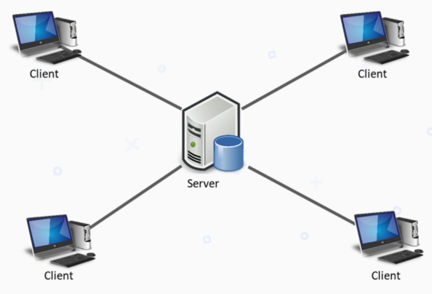
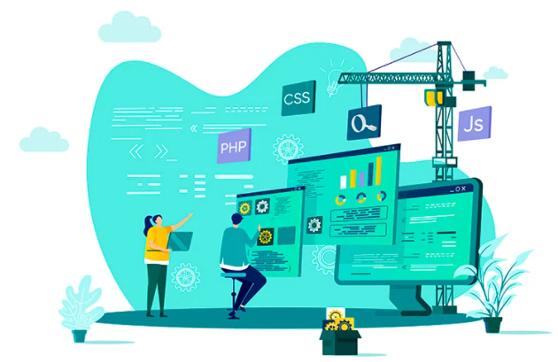
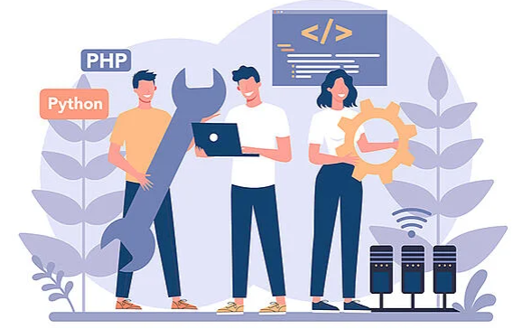

¿QUÉ ES LA ARQUITECTURA CLIENTE-SERVIDOR?
El Cliente-Servidor es uno de los estilos arquitectónicos distribuidos más conocidos, el cual está
compuesto por dos componentes, el proveedor y el consumidor.

En esta arquitectura, el servidor deberá exponer un mecanismo que permite a los clientes conectarse, que
por lo general es TCP/IP, esta comunicación permitirá una comunicación continua y bidireccional, de tal
forma que el cliente puede enviar y recibir datos del servidor y viceversa.
FRONT-END
El frontend de una web describe la parte que el visitante puede ver. Incluye todo el contenido que se
muestra y que es visible para el público o los usuarios que han iniciado sesión.

ROLES EN EL FRONT-END
Los roles de los programadores Front-end, usualmente se dividen en UI Developer/Diseñador UI, Web Designer/Maquetador y
Front-end Developer/Programador Front-end, aunque también se pueden llegar a dividirse en más o ramificarse para dar
lugar a una especialidad, estos son los que podrían considerarse como los roles generales.
UI Developer / Diseñador UI: el UI Developer usualmente diseña siguiendo un esquema propuesto
anteriormente en conjunción con el equipo de desarrollo, pues toda esta etapa hay que definirla y
documentarla antes de empezar a crear las pantallas del sitio web.
Web Designer / Maquetador: el trabajo del Web Designer es llevar las pantallas diseñadas por el
UI Developer a código HTML y CSS, el cual se ejecuta al cargar la página web. Tener un buen código de
HTML nos ayuda para la usabilidad y el marcado del sitio, además también mejora el posicionamiento de
la página en los motores de búsqueda como Google o Bing, mientras que una buena sintaxis escrita en CSS
está directamente relacionada con el rendimiento del sitio web y de las aplicaciones, por ello se necesita
un amplio conocimiento de estos dos lenguajes.
Programador Front-end: para este rol la programación se realiza casi enteramente en JavaScript,
por lo que su conocimiento a profundidad es obligatorio, para ser más exactos, no es que se escriba código
en JavaScript plano, sino que se utilizan diversas bibliotecas o frameworks de este lenguaje. En este
punto es importante saber que los Front-end Developers se encargan de agregar la lógica al sitio web,
¿a qué nos referimos con esto? A que ellos o ellas implementan las API provenientes del Back-end o de
algún otro servidor externo, las imprime en pantalla y les agrega validaciones para que puedan funcionar.
LENGUAJES Y FRAMEWORK UTILIZADOS EN EL FORNT-END
HTML (lenguaje de marcado de hipertexto, se utilizan etiquetas que estructuran y organizan
el contenido de la web).
CSS (se encarga del formato y diseño visual de las páginas web escritas en html) para
darle estructura y estilo al sitio.
Javascript (un lenguaje de programación, rápido y seguro para programar centros de datos,
consolas, teléfonos móviles o Internet) para complementar los anteriores y darle dinamismo a los
sitios web.
HTML y CSS son lenguajes de marcado y estilo. Javascript es un lenguaje de programación.
De ellos se generan una gran cantidad de frameworks y librerías que van aumentan las capacidades que se
tiene para generar cualquier tipo de interfaz de usuario, como React, Redux, Angular, Bootstrap, Foundation,
LESS, Sass, Stylus y PostCSS, entre otros.
BACK-END
Mientras que el frontend es la capa de programación ejecutada en el navegador del usuario, el
backend procesa la información que alimentará el frontend de datos.
ROLES EN EL BACK-END
Backend Developer o Programador Backend
DBA(Database Administrator)
Arquitecto Cloud
QA (Quality Assurance o Control de Calidad)
LENGUAJES Y FRAMEWORK UTILIZADOS EN EL BACK-END
Los lenguajes de backend más utilizados. Uno a uno vemos los principales lenguajes y tecnologías web que
representan el top del ranking. Entre ellas:
PHP
LUA + OpenResty
PYTHON
ASP. NET
JAVA + OpenGse
RUBY + RUBY ON RAILS
¿QUÉ ES UN STACK?
Un stack es el conjunto de tecnologías y herramientas que se utilizan para desarrollar una aplicación, es decir,
son todas las tecnologías que usa el frontend y el backend.
A este término se le denomina desarrollador Fullstack, se refiere a un programador capaz de manejar todas
estas herramientas, lenguajes y aspectos relacionados con la creación y el mantenimiento de una aplicación web.
